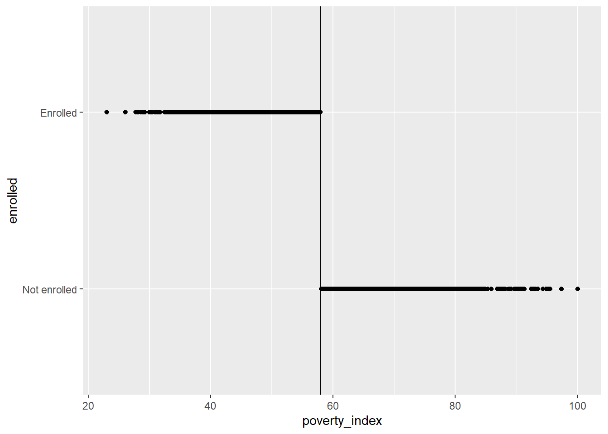
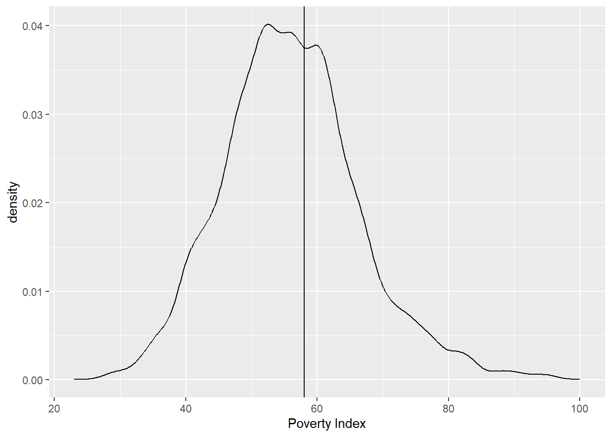
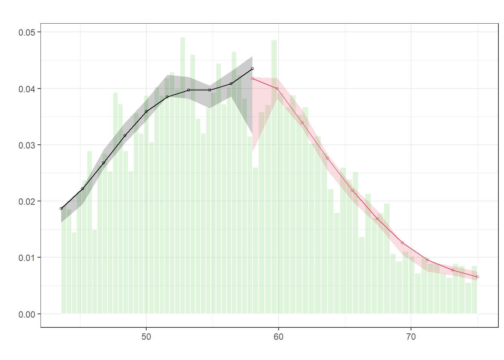
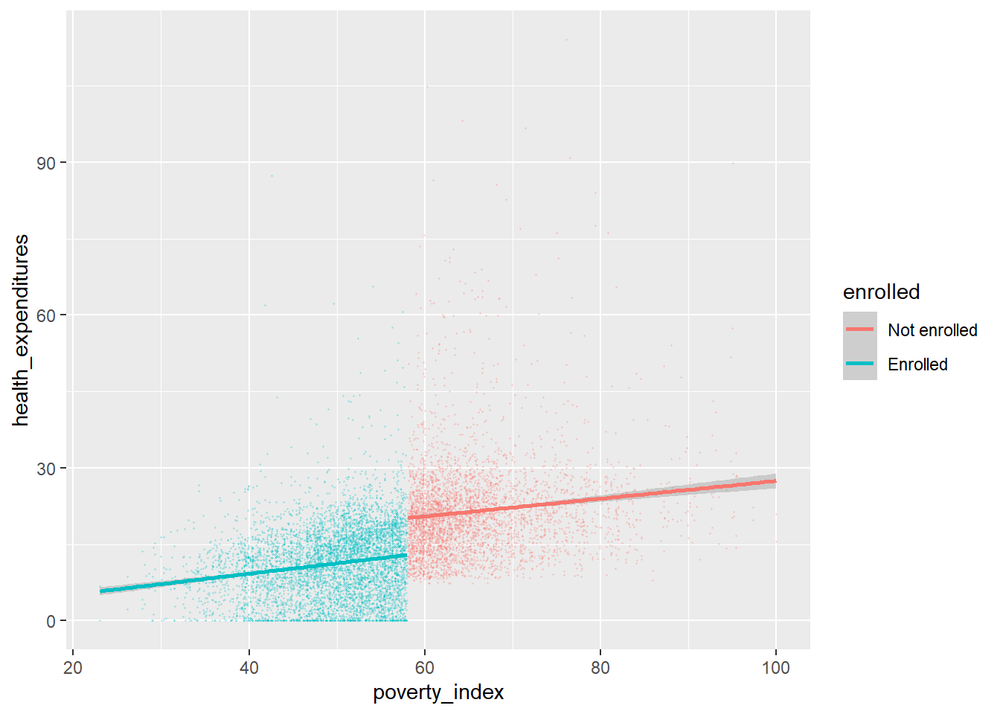

library(tidyverse) # For ggplot, mutate(), filter(), and friends
library(broom) # For converting models to data frames
library(estimatr) # For lm_robust() and iv_robust()
library(modelsummary) # For showing side-by-side regression tables
library(MatchIt) # For matching
library(rdrobust) # For nonparametric RD
library(rddensity) # For nonparametric RD density tests
library(haven) # For reading Stata files
set.seed(1234) # Make any random stuff be the same every time you run this
# Round everything to 3 digits by default
options("digits" = 3)
# Turn off the message that happens when you use group_by() and summarize()
options(dplyr.summarise.inform = FALSE)
# Load raw data
hisp_raw <- read_stata("data/evaluation.dta")
# Make nice clean dataset to use for the rest of the assignment
hisp <- hisp_raw %>%
# Having a numeric 0/1 column is sometimes helpful for things that don't like
# categories, like matchit()
mutate(enrolled_num = enrolled) %>%
# Convert these 0/1 values to actual categories
mutate(eligible = factor(eligible, labels = c("Not eligible", "Eligible")),
enrolled = factor(enrolled, labels = c("Not enrolled", "Enrolled")),
round = factor(round, labels = c("Before", "After")),
treatment_locality = factor(treatment_locality, labels = c("Control", "Treatment")),
promotion_locality = factor(promotion_locality, labels = c("No promotion", "Promotion"))) %>%
# Get rid of this hospital column because (1) we're not using it, and (2) half
# of the households are missing data, and matchit() complains if any data is
# missing, even if you're not using it
select(-hospital)Problem set 8: The Health Insurance Subsidy Program
The World Bank’s Impact Evaluation in Practice has used a hypothetical example of a health insurance program throughout the book. This Health Insurance Subsidy Program (HISP) provides subsidies for buying private health insurance to poorer households, with the goal of lowering personal health expenditures, since people can rely on insurance coverage instead of paying out-of-pocket. Think of the HISP as a version of the Affordable Care Act (ACA, commonly known as Obamacare).
The dataset includes a number of important variables you’ll use throughout this assignment:
| Variable name | Description |
|---|---|
health_expenditures |
Out of pocket health expenditures (per person per year) |
eligible |
Household eligible to enroll in HISP |
enrolled |
Household enrolled in HISP |
round |
Indicator for before and after intervention |
treatment_locality |
Household is located in treatment community |
poverty_index |
1-100 scale of poverty |
promotion_locality |
Household is located in community that received random promotion |
enrolled_rp |
Household enrolled in HISP following random promotion |
It also includes several demographic variables about the households. Each of these are backdoor confounders between health expenditures participation in the HISP:
| Variable name | Description |
|---|---|
age_hh |
Age of the head of household (years) |
age_sp |
Age of the spouse (years) |
educ_hh |
Education of the head of household (years) |
educ_sp |
Education of the spouse (years) |
female_hh |
Head of household is a woman (1 = yes) |
indigenous |
Head of household speaks an indigenous language (1 = yes) |
hhsize |
Number of household members |
dirtfloor |
Home has a dirt floor (1 = yes) |
bathroom |
Home has a private bathroom (1 = yes) |
land |
Number of hectares of land owned by household |
hospital_distance |
Distance to closest hospital (km) |
You will use each of the five main econometric approaches for estimating causal effects to measure the effect of HISP on household health expenditures. Don’t worry about conducting in-depth baseline checks and robustness checks. For the sake of this assignment, you’ll do the minimum amount of work for each method to determine the causal effect of the program.
Task 1: RCTs
To measure the effect of HISP accurately, World Bank researchers randomly assigned different localities (villages, towns, cities, whatever) to treatment and control groups. Some localities were allowed to join HISP; others weren’t.
Here’s what you should do:
- Make a new dataset that only looks at eligible households (
filter(eligible == "Eligible"))
hisp_eligible<-hisp|>filter(eligible=='Eligible')- Make a new dataset that only looks at eligible households after the experiment (
filter(round == "After"))
hisp_eligible<-hisp_eligible|>filter(round=='After')- Calculate the average health expenditures in treatment and control localities (
treatment_locality) before the intervention (round == "Before"). Were expenditures fairly balanced across treatment and control groups before the intervention?
hisp|>group_by(treatment_locality)|>filter(round=='Before')|>
summarise(avg_exp=mean(health_expenditures))# A tibble: 2 × 2
treatment_locality avg_exp
<fct> <dbl>
1 Control 17.4
2 Treatment 17.0- Calculate the average health expenditures in treatment and control localities after the intervention (
round == "After")
hisp|>group_by(treatment_locality)|>filter(round=='After')|>
summarise(avg_exp=mean(health_expenditures))# A tibble: 2 × 2
treatment_locality avg_exp
<fct> <dbl>
1 Control 20.1
2 Treatment 13.7- Determine the difference in average health expenditures across treatment and control after the intervention
17.98-7.84[1] 10.1- Using data after the intervention, use linear regression to determine the difference in means and statistical significance of the difference (hint: you’ll want to use
health_expenditures ~ treatment_locality). Uselm_robust()from the estimatr package and cluster bylocality_identifierif you’re feeling adventurous.
m_after<-lm_robust(health_expenditures~treatment_locality, clusters = locality_identifier,
data = hisp|>filter(round=='After'))- Create another model that controls for the following variables:
age_hh + age_sp + educ_hh + educ_sp + female_hh + indigenous + hhsize + dirtfloor + bathroom + land + hospital_distance. (Uselm_robust()again if you’re brave.) Does the estimate of the causal effect change?
m_after_control<-lm_robust(health_expenditures~treatment_locality+age_hh + age_sp + educ_hh + educ_sp + female_hh + indigenous + hhsize + dirtfloor + bathroom + land + hospital_distance, clusters = locality_identifier,
data = hisp|>filter(round=='After'))- Show the results from the two regressions in a side-by-side table if you want
models<-list(m_after,m_after_control)
# Do that here, either in one big chunk, or in smaller chunks with text in
# between where you answer the questions (preferred)
modelsummary(models)| Model 1 | Model 2 | |
|---|---|---|
| (Intercept) | 20.064 | 28.957 |
| (0.379) | (0.809) | |
| treatment_localityTreatment | −6.406 | −6.130 |
| (0.504) | (0.402) | |
| age_hh | 0.108 | |
| (0.015) | ||
| age_sp | 0.008 | |
| (0.016) | ||
| educ_hh | 0.113 | |
| (0.046) | ||
| educ_sp | −0.010 | |
| (0.050) | ||
| female_hh | 1.090 | |
| (0.474) | ||
| indigenous | −2.806 | |
| (0.375) | ||
| hhsize | −2.382 | |
| (0.064) | ||
| dirtfloor | −3.044 | |
| (0.298) | ||
| bathroom | 0.971 | |
| (0.255) | ||
| land | 0.165 | |
| (0.040) | ||
| hospital_distance | −0.006 | |
| (0.005) | ||
| Num.Obs. | 9914 | 9914 |
| R2 | 0.073 | 0.344 |
| AIC | 76481.6 | 73066.6 |
| BIC | 76503.2 | 73167.4 |
| RMSE | 11.45 | 9.63 |
| Std.Errors | by: locality_identifier | by: locality_identifier |
Task 2: Inverse probability weighting and/or matching
Instead of using experimental data, we can estimate the causal effect using observational data alone by closing all the confounding backdoors. In this task, you should choose one of two approaches: inverse probability weighting or matching. AGAIN: you only need to do one of these. You can do both for fun, but you only need to do one.
Do the following (for both approaches):
- Make a dataset based on
hispthat only includes observations from after the intervention (round == "After"). Even though you technically have a column that indicates if the household was in the treatment group (treatment_locality), you’re going to pretend that you don’t have it This is now observational data—all you know is that a bunch of households participated in HISP and a bunch didn’t. - Run a naive model that estimates the effect of HISP enrollment on health expenditures (
health_expenditures ~ enrolled) using this after-only observational data. What is the effect? Is this accurate? Why or why not?
# Do that here, either in one big chunk, or in smaller chunks with text in
# between where you answer the questions (preferred)
naive<-lm(health_expenditures ~ enrolled,data = hisp|>filter(round=='After'))If you’re using inverse probability weighting, do the following:
- Use logistic regression to model the probability of enrolling in the HISP. Hint: you’ll need to use
glm()(replace stuff in<>like<THINGS>with actual column names or dataset names). Also, note that this code below isn’t in an actual R chunk, so don’t try to run it.
model_logit <- glm(enrolled ~ COUNFOUNDER1 + COUNFOUNDER2 + ...,
data = hisp|>filter(round=='After'),
family = binomial(link = "logit"))- Generate propensity scores for enrollment in the HISP using something like this code (again, this isn’t a chunk; don’t try to run it):
enrolled_propensities <- augment_columns(MODEL_NAME, NAME_OF_YOUR_AFTER_DATASET,
type.predict = "response") %>%
rename(p_enrolled = .fitted) - Add a new column to
enrolled_propensitieswithmutate()that calculates the inverse probability weights using this formula (hint: “propensity” will bep_enrolled; “Treatment” will betreatment_num):
\[ \frac{\text{Treatment}}{\text{Propensity}} + \frac{1 - \text{Treatment}}{1 - \text{Propensity}} \]
- Run a model that estimates the effect of HISP enrollment on health expenditures (
health_expenditures ~ enrolled) using theenrolled_propensitiesdata, weighting by your new inverse probability weights column. What is the causal effect of HISP on health expenditures? How does this compare to the naive model? Which do you believe more? Why? - Show the results from the two regressions in a side-by-side table if you want
# Do that here, either in one big chunk, or in smaller chunks with text in
# between where you answer the questions (preferred)If you’re using matching, do the following:
- Use
matchit()to find the best matches for enrollment based on Mahalanobis nearest neighbor matching. Thematchit()function can’t work with categorical variables, so make sure you useenrolled_numinstead ofenrolled. Use code similar to this (replace stuff in<>like<THINGS>with actual column names or dataset names). Also, note that this code below isn’t in an actual R chunk, so don’t try to run it.
matched <- matchit(enrolled_num ~ COUNFOUNDER1 + COUNFOUNDER2 + ...,
data = NAME_OF_YOUR_AFTER_DATASET,
method = "nearest", distance = "mahalanobis", replace = TRUE)It might take a minute to run the matching. If you include `cache=TRUE` in the chunk options, R will keep track of when the chunk changes; if you knit and there's been a change to the chunk, R will run the chunk, but if you knit and there's been no changes, R will use the previous output of the chunk and not actually run it. - Run
summary(matched)and see how many rows were matched and how many will be discarded. - Use
match.data()to store the results of the match as a new dataset. - Run a model that estimates the effect of HISP enrollment on health expenditures (
health_expenditures ~ enrolled) using the matched data, weighting by theweightscolumn thatmatchit()generated. What is the causal effect of HISP on health expenditures? How does this compare to the naive model? Which do you believe more? Why? - Show the results from the two regressions in a side-by-side table if you want
# Do that here, either in one big chunk, or in smaller chunks with text in
# between where you answer the questions (preferred)Task 3: Diff-in-diff
Instead of using experimental data, we can estimate the causal effect using observational data alone with a difference-in-difference approach. We have data indicating if households were enrolled in the program (enrolled) and data indicating if they were surveyed before or after the intervention (round), which means we can find the differences between enrolled/not enrolled before and after the program.
Do the following:
- Make a new dataset based on
hispthat only includes observations from the localities that were randomly chosen for treatment (treatment_locality == "Treatment")
# Do that here, either in one big chunk, or in smaller chunks with text in
# between where you answer the questions (preferred)hisp_local<-hisp|>filter(treatment_locality=='Treatment')- Using that new dataset, run a regression model that estimates the difference-in-difference effect of being enrolled in the HISP program (huge hint: use
health_expenditures ~ enrolled + round + enrolled * round). Uselm_robust()and cluster bylocality_identifierif you’re brave. What is the causal effect of HISP on health expenditures?
m_did1<-lm_robust(health_expenditures ~ enrolled + round + enrolled * round,clusters = locality_identifier ,data=hisp_local)- Run a second model that estimates the difference-in-difference effect, but control for the following variables:
age_hh + age_sp + educ_hh + educ_sp + female_hh + indigenous + hhsize + dirtfloor + bathroom + land + hospital_distance. (Again, cluster bylocality_identifierif you’re brave.) How does the causal effect change?
m_did2<-lm_robust(health_expenditures ~ enrolled + round + enrolled * round+age_hh + age_sp + educ_hh + educ_sp + female_hh + indigenous + hhsize + dirtfloor + bathroom + land + hospital_distance,clusters = locality_identifier ,data=hisp_local)- Show the results from the two regressions in a side-by-side table if you want
modelsummary(list(m_did1,m_did2))| Model 1 | Model 2 | |
|---|---|---|
| (Intercept) | 20.791 | 27.395 |
| (0.174) | (0.561) | |
| enrolledEnrolled | −6.302 | −1.513 |
| (0.194) | (0.130) | |
| roundAfter | 1.513 | 1.451 |
| (0.360) | (0.359) | |
| enrolledEnrolled × roundAfter | −8.163 | −8.161 |
| (0.321) | (0.321) | |
| age_hh | 0.080 | |
| (0.011) | ||
| age_sp | −0.020 | |
| (0.013) | ||
| educ_hh | 0.060 | |
| (0.029) | ||
| educ_sp | −0.077 | |
| (0.034) | ||
| female_hh | 1.104 | |
| (0.318) | ||
| indigenous | −2.312 | |
| (0.239) | ||
| hhsize | −1.995 | |
| (0.039) | ||
| dirtfloor | −2.300 | |
| (0.165) | ||
| bathroom | 0.500 | |
| (0.160) | ||
| land | 0.091 | |
| (0.029) | ||
| hospital_distance | −0.003 | |
| (0.003) | ||
| Num.Obs. | 9919 | 9919 |
| R2 | 0.344 | 0.552 |
| AIC | 69189.4 | 65431.6 |
| BIC | 69225.4 | 65546.8 |
| RMSE | 7.91 | 6.54 |
| Std.Errors | by: locality_identifier | by: locality_identifier |
Task 4: RDD
Eligibility for the HISP is determined by income. Households that have an income of less than 58 on a standardized 1-100 scale (poverty_index) qualify for the program and are automatically enrolled. Because we have an arbitrary cutoff in a running variable, we can use regression discontinuity to measure the effect of the program on health expenditures.
Do the following:
- Make a new dataset based on
hispthat only includes observations from the localities that were randomly chosen for treatment (treatment_locality == "Treatment")
hisp_rdd<-hisp|>filter(treatment_locality=='Treatment')- Use
mutate()to add new variable that centers the poverty index variable at 58
hisp_rdd<-hisp_rdd|>mutate(poverty_centered=poverty_index-58)- Determine if the discontinuity is sharp or fuzzy. (Hint: create a scatterplot with
poverty_indexon the x-axis,enrolledon the y-axis, and a vertical line at 58.)
ggplot(hisp_rdd)+aes(x=poverty_index,y=enrolled)+geom_vline(xintercept = 58)+geom_point()
- Determine if the distribution of the running variable (
poverty_index) has a jump near the cutoff (it shouldn’t). (Hint: create a histogram withpoverty_indexon the x-axis and a vertical line at 58. Use a McCrary test to see if there’s a significant break in the distribution at 58.)
ggplot(hisp_rdd, aes(x = poverty_index)) +
geom_vline(xintercept = 58) +
geom_density() +
labs(x = "Poverty Index")
We can also conduct a McCrary density test, to examine this more formally.
test_density <- rdplotdensity(rdd = rddensity(hisp_rdd$poverty_index, c = 58),
X = hisp_rdd$poverty_index,
type = "both")Warning: The dot-dot notation (`..density..`) was deprecated in ggplot2 3.4.0.
ℹ Please use `after_stat(density)` instead.
ℹ The deprecated feature was likely used in the lpdensity package.
Please report the issue to the authors.
- Visualize the jump in outcome at the cutoff with a scatterplot (Hint: create a scatterplot with
poverty_indexon the x-axis,health_expenditureson the y-xis, color byenrolled, add a vertical line at 58, and add trendlines withgeom_smooth(method = "lm"). You might want to adjust the size and transparency of the points withgeom_point(alpha = 0.2, size = 0.2)or something similar.)
ggplot(hisp_rdd)+aes(x=poverty_index,y=health_expenditures,color=enrolled)+geom_point(alpha=0.2,size=0.2)+geom_smooth(method="lm")`geom_smooth()` using formula = 'y ~ x'
- Graphically, does it look like the HISP reduces health expenditures?
- Build a parametric regression model to estimate the size of the gap at the cutoff. You’ll want to use the centered policy index variable to make it easier to interpret. You probably want to create a new dataset that only includes observations within some bandwidth that you choose (
filter(poverty_index_centered >= SOMETHING & poverty_index_centered <= SOMETHING)). How big is the effect?
df_treat <- hisp_rdd %>%
mutate(poverty_index_c= poverty_index - 58)
out_rdd <- lm_robust(health_expenditures ~ poverty_index_c * enrolled +
age_hh + age_sp + educ_hh + educ_sp +
female_hh + indigenous + hhsize + dirtfloor +
bathroom + land + hospital_distance,
data = df_treat %>% filter(round == 'After'))- Use
rdrobust()from the rdrobust library to estimate the size of the gap nonparametrically. For the sake of simplicity, just use the default (automatic) bandwidth and kernel. How big is the effect?
out_rdd_robust <- lm_robust(health_expenditures ~ enrolled * poverty_index_c +
enrolled * I(poverty_index_c^2) +
enrolled * I(poverty_index_c^3) +
age_hh + age_sp + educ_hh + educ_sp +
female_hh + indigenous + hhsize + dirtfloor +
bathroom + land + hospital_distance,
data = df_treat %>% filter(round == 'After'))out_rdd5 <- lm_robust(health_expenditures ~ enrolled * poverty_index_c +
age_hh + age_sp + educ_hh + educ_sp +
female_hh + indigenous + hhsize + dirtfloor +
bathroom + land + hospital_distance,
data = df_treat %>% filter(round == 'After' &
abs(poverty_index_c) <=5))modelsummary(list(out_rdd,out_rdd_robust,out_rdd5))| Model 1 | Model 2 | Model 3 | |
|---|---|---|---|
| (Intercept) | 29.221 | 28.952 | 29.617 |
| (0.945) | (1.049) | (1.597) | |
| poverty_index_c | 0.171 | 0.324 | 0.403 |
| (0.041) | (0.214) | (0.240) | |
| enrolledEnrolled | −9.029 | −8.937 | −8.543 |
| (0.443) | (0.755) | (0.860) | |
| age_hh | 0.091 | 0.092 | 0.061 |
| (0.020) | (0.020) | (0.027) | |
| age_sp | −0.055 | −0.055 | −0.023 |
| (0.023) | (0.023) | (0.031) | |
| educ_hh | −0.067 | −0.072 | −0.060 |
| (0.058) | (0.058) | (0.092) | |
| educ_sp | −0.139 | −0.136 | −0.205 |
| (0.066) | (0.065) | (0.099) | |
| female_hh | 0.573 | 0.562 | 0.857 |
| (0.581) | (0.583) | (0.825) | |
| indigenous | −1.880 | −1.893 | −2.036 |
| (0.292) | (0.294) | (0.512) | |
| hhsize | −1.979 | −1.977 | −2.041 |
| (0.069) | (0.069) | (0.103) | |
| dirtfloor | −1.756 | −1.764 | −1.926 |
| (0.304) | (0.305) | (0.488) | |
| bathroom | 0.570 | 0.571 | 0.101 |
| (0.272) | (0.272) | (0.459) | |
| land | −0.048 | −0.050 | −0.014 |
| (0.043) | (0.043) | (0.074) | |
| hospital_distance | −0.006 | −0.006 | −0.006 |
| (0.004) | (0.004) | (0.006) | |
| poverty_index_c × enrolledEnrolled | −0.198 | ||
| (0.046) | |||
| I(poverty_index_c^2) | −0.016 | ||
| (0.018) | |||
| I(poverty_index_c^3) | 0.000 | ||
| (0.000) | |||
| enrolledEnrolled × poverty_index_c | −0.390 | −0.415 | |
| (0.260) | (0.309) | ||
| enrolledEnrolled × I(poverty_index_c^2) | 0.015 | ||
| (0.022) | |||
| enrolledEnrolled × I(poverty_index_c^3) | 0.000 | ||
| (0.001) | |||
| Num.Obs. | 4960 | 4960 | 1879 |
| R2 | 0.458 | 0.459 | 0.406 |
| AIC | 36043.8 | 36048.8 | 13711.8 |
| BIC | 36148.0 | 36179.0 | 13800.5 |
| RMSE | 9.13 | 9.12 | 9.22 |
# Do that here, either in one big chunk, or in smaller chunks with text in
# between where you answer the questions (preferred)Task 5: IVs/2SLS
Finally, we can use an instrument to remove the endogeneity from the choice to enroll in the HISP and estimate the causal effect from observational data. As you read in chapter 5, World Bank evaluators randomly selected households to receive encouragement to enroll in HISP. You can use this encouragement as an instrument for enrollment.
Do the following:
- Create a dataset based on
hispthat only includes observations from after the intervention (round == "After") - Build a naive regression model that estimates the effect of HISP enrollment on health expenditures. You’ll need to use the
enrolled_rpvariable instead ofenrolled, since we’re measuring enrollment after the encouragement intervention. (Hint: you’ll want to usehealth_expenditures ~ enrolled_rp.) What does this naive model tell us about the effect of enrolling in HISP?
naive_mod<-lm(health_expenditures~enrolled_rp,data = hisp|>filter(round=='After'))m_enroll <- lm_robust(enrolled_rp ~ promotion_locality,
clusters = locality_identifier,
data = hisp %>% filter(round == 'After'))m_base_health <- lm_robust(health_expenditures ~ promotion_locality,
clusters = locality_identifier,data = hisp %>% filter(round == 'After'))- Check the relevance, exclusion, and exogeneity of promotion (
promotion_locality) as an instrument. For relevance, you’ll want to run a model that predicts enrollment based on promotion (hint:enrolled_rp ~ promotion_locality) and check (1) the significance of the coefficient and (2) the F-statistic. For exclusion and exogeneity, you’ll have to tell a convincing story that proves promotion influences health expenditures only through HISP enrollment.
m_enroll <- lm_robust(enrolled_rp ~ promotion_locality,
clusters = locality_identifier,
data = hisp %>% filter(round == 'After'))- Run a 2SLS regression model with promotion as the instrument. You can do this by hand if you want (i.e. run a first stage model, extract predicted enrollment, and use predicted enrollment as the second stage), or you can just use the
iv_robust()function from the estimatr library. (Hint: you’ll want to usehealth_expenditures ~ enrolled_rp | promotion_localityas the formula). After removing the endogeneity from enrollment, what is the casual effect of enrollment in the HISP on health expenditures? - Show the results from the two regressions in a side-by-side table if you want
#Conduct this estimation with and without covariate adjustment. Interpret.
m_cace <- iv_robust(health_expenditures ~ enrolled_rp |
promotion_locality,
clusters = locality_identifier,
data = hisp %>% filter(round == 'After'))
m_cace_wcov <- iv_robust(health_expenditures ~ enrolled_rp +
age_hh + age_sp + educ_hh + educ_sp +
female_hh + indigenous + hhsize + dirtfloor +
bathroom + land + hospital_distance |
promotion_locality +
age_hh + age_sp + educ_hh + educ_sp +
female_hh + indigenous + hhsize + dirtfloor +
bathroom + land + hospital_distance ,
clusters = locality_identifier,
data = hisp %>% filter(round == 'After'))# Do that here, either in one big chunk, or in smaller chunks with text in
# between where you answer the questions (preferred)Task 6: Summary
You just calculated a bunch of causal effects. List them here. Which one do you trust the most? Why?